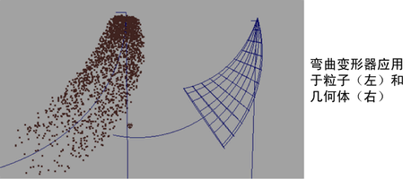

变形器可通过多种方式影响粒子位置。

使粒子变形
- 创建包含粒子的场景。
- 选择粒子对象。
- 在“动画”(Animation)菜单集中，单击“变形”(Deform)以显示变形器列表
- 选择要对选定粒子对象使用的变形器。可以使用除了蒙皮和融合形变变形器之外的所有变形器使粒子变形。
变形器的运行方式与对几何体的运行方式相同。还可以放置变形器。
还可以将粒子变形与力组合：使粒子变形，然后将所需力应用于中间对象。或者，也可以在应用变形器之前将力应用于粒子。
注： 受变形器影响的粒子不展示惯性。属性（如速度）不受粒子形状变形的影响，应在使用变形器创建粒子动画时予以考虑。
例如，在流内通过弯曲变形器变形的粒子不会相对于其在弯曲内的位置而减速或加速。